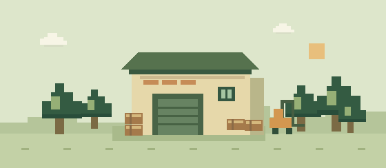

↗Inventory Control
WEB · BACKENDПлатформа складского учёта для деревообрабатывающего предприятия: от приёмки до отчётности.
Главный backend-разработчик · по совместительству — системный
и бизнес-аналитик
Для ООО «Залесное»О проекте